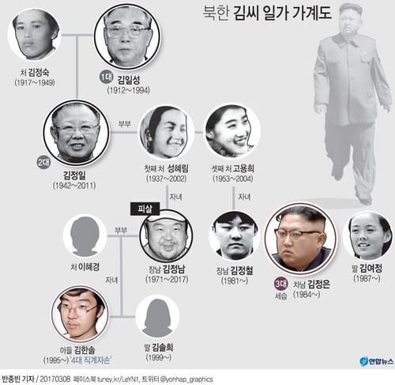

지금 미국 cia가 보호하는 있는 북한 김한솔

찐백두혈통 첫부인의 장남의 장남이다
첩의자식 김정은이랑은 다름
김한솔은 핀란드 언론과의 인터뷰에서 "한 번도 할아버지와 삼촌을 만나 본 적이 없다"며 "그래서 삼촌이 어떻게 독재자가 됐는지 모른다"고 말했다.
김한솔은 독재를 반대해왔고 어릴때부터 북한밖에서만
생활해왔고 북한 개방해야된다고 주장하던 인물임
미국의 꼭두각시기도 하고 북에 지지기반이 없다는게 단점인데
김한솔이 북정권 잡으면 남북 완전개방될 가능성이 큼
자유롭게 북한 개마고원 여행 다니게 될지도 모름

콜오브듀티 최고수령이 김한솔이랑 닮은건 우연이겠지? ㅋㅋ
김정은이 권력꽉잡았으니 김한솔은 정통성 없는거나 마찬가지임
김정은이 그냥 백두혈통 그자체지 ㅋㅋㅋ